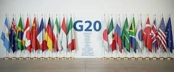
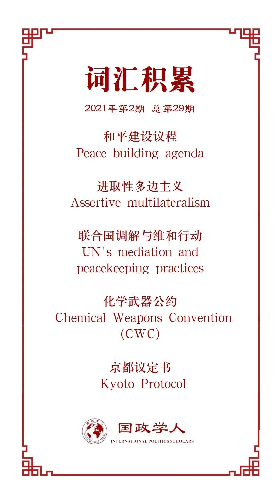

收录于合集

作品简介
【作者】 Bruce Jones，布鲁金斯学会东亚政策研究中心国际秩序和战略项目主任，外交政策高级研究员；Susana Malcorra，IE全球与公共事务学院院长，阿根廷共和国前外交事务和宗教部长。
【编译】 石雨宸（国政学人编译员，南开大学周恩来政府管理学院本科生）
【校对】 阮辰阳
【审核】 姚寰宇
【排版】 高辉
【美编 】马颖
【来源】 布鲁金斯学会(Brookings.edu), https://www.brookings.edu/research/competing- for-order-confronting-the-long-crisis-of-multilateralism/
【归档】 《国际关系前沿》2021年第2期，总第29期。
机构简介
布鲁金斯学会（Brookings Institution），美国著名智库之一，主要研究社会科学尤其是经济与发展、都市政策、政府、外交政策以及全球经济发展等议题，总部位于华盛顿特区。
争夺秩序：直面多边主义的长期危机
Competing for Order: Confronting the Long Crisis of Multilateralism
Bruce Jones
Susana Malcorra
内容提要
新冠疫情危机提醒了我们，多边合作框架严重受损，但若放弃定会带来危险，我们需要显著提高多边安排应对挑战的能力。但在此之前，我们需要认识到三个现实：西方必须愿意承担外交和经济成本才能享有主导多边秩序并借此伸展本国政策的选择权；在开展合作之前，必须先将多边领域视为竞争区域；以及大国之间的军事冲突和全球化崩溃的风险不可忽视。
面临挑战，我们需要认识到，首先，面对不断变化的国际关系，多边秩序安排会经常发生演变。其次，国际自由主义仍具有相当力量，而西方国家虽然伤痕累累，但并未崩溃。
文章导读
01
多边秩序的历史沿革
（一）冷战后的扩张
美国在冷战后的十年里表现得非常不寻常。作为国际事务中的唯一主导力量，它选择进一步行使霸权，推进多边贸易和安全安排，并邀请俄罗斯等曾经的对手加入。美国还大幅扩大了多边机构的职权和责任。四个制度性安排的演变足以概括后冷战时期。第一，在欧洲，美国开启了与俄罗斯的北约伙伴关系。第二，美国在亚洲邀请了中国加入世界贸易组织。第三，在非洲和拉丁美洲，联合国的冲突管理事项扩展到会员国的内部安全和政治事务——即所谓的和平建设议程（peacebuilding agenda）。第四，在全球范围内，美国则提出了千年发展目标，将海外发展援助议程从其冷战的战略逻辑中抽离出来用于减贫。这些制度性安排带来的是一个大国关系相对和谐、国际冲突减少与新的国际机制建立的约20年较为繁荣稳定的时期。
在这一时期（大约从1989年到2001年），西方在国际体系中享有近乎完全的主导地位。总的来说，美国、其核心欧洲盟友和与美国结盟的西方国家支配着这些机构的治理，控制财政、选择领导人并且几乎决定了其政策选择，从而主导了多边秩序的塑造。这种做法蕴含了西方国家拥护的广泛利益概念，并认为其很大程度上是为了“全球利益”。不论是广义的国家利益概念、关注欠发达国家命运的传统，还是西方社会强烈的人道主义冲动，所有这些都指向了民主和市场导向型的国家的基本逻辑，这些国家在自己的体系中看到了自由贸易、自由价值观和集体安全“双赢”扩张的前景。这一时期多边体系的核心是西方向发展中国家传播自由主义的机制，美国作为世界霸主选择了多边扩张的宽容立场，也带来了合作的黄金时代。
（二）重组
9·11基地组织袭击和美国在中东持续近20年的战争大幅中断了原本良性运转的国际合作，但尚未使其崩溃。原本，伴随着中国等发展中国家的贸易谈判、美国和北约在阿富汗行动的更广泛的伙伴关系与亚洲金融危机后G20的创建，反恐合作似乎创造了一个推动国际合作的绝佳机会。然而，随着时间推移，人们对美国在阿富汗战争的糟糕结果和转移到伊拉克战场的行为感到失望，使这一起初的联盟变得紧张。小布什政府退出京都议定书的决定也增加了西方内部的紧张感。而随着西方面临着向国外输出自由价值观和吸收国内经济成本以推进自由贸易政策的政治分歧，多哈回合贸易谈判也陷入僵局。
尽管如此，美国权力的规模和替代性经济或安全秩序的缺乏，让美国广泛掌控了国际秩序和多边体系的动向。美国对多边主义的态度在这一时期发生了变化。一方面，小布什自己的想法发生了转变，从第一任期对多边主义的怀疑到第二任期最终认可“进取性多边主义”（assertive multilateralism）的概念。这意味着它在塑造国际机构的政策方向方面比1990年代更加坚定。21世纪初遭遇的威胁使美国在行使权力时更加严格，9-11后早期的“要么支持我们，要么反对我们”（you’re with us or you’re against us）的观点虽然并没有真正成为这一时期美国外交的特征，但其影响却挥之不去。
而之后的三件事一起结束了“进取性多边主义”的阶段。首先，2008年的全球金融危机不仅使美国财政部花费更多成本，而且使美国与其亲密盟友间的关系更加紧张，同时还为此后的欧债危机埋下伏笔。其次，“阿拉伯之春”开始席卷北非和中东，使美国陷入困境，并为俄罗斯从中破坏打开了窗口。这一系列事件也导致美欧因不稳定的难民进入欧洲的问题而关系更加紧张。最后，所有这些都发生在新兴大国开始对全球经济和多边事务施加影响的时候。
（三）金融危机与G20时刻

起初，2008年的金融危机似乎再次巩固了多边秩序，美国的行动方式似乎预示着一个更广泛的多边主义时刻的到来：它在7国集团（G7）基础上召集了更多经济大国组成了20国集团。转向20国集团的安排似乎预示着世界大国之间更广泛、持续合作的前景，以及一个更具包容性但仍具合作性的秩序。究其原因，首先，7国集团向G20的转变在危机爆发后的短短几周内便已完成，意味着美国已经意识到它需要更多伙伴来遏制损害。第二，该机制从财政部长级别到领导人级别的提升不仅表明了危机的严重性，还表明了该机制的职权范围和权限可能将会继续扩大，这一点在贸易保护主义和可持续发展领域得到体现，甚至在国家安全领域也短暂发挥了作用。第三，集团成员国目的的严肃性，以及深厚的共同利益感相互连结，即使只是消极地体现在各国避免经济萧条与以邻为壑的贸易保护主义上，仍旧促进了多边制度的维护。第四，在一段时间内，20国集团的制度安排至少在一段时间内的确有效恢复了全球金融体系的流动性，实现了经济复苏，避免了保护主义。
伴随着G20峰会的启动，美国新任政府的就职进一步扩大了多边合作的可能性，在奥巴马早期的外交政策中，不断渗透出与欧洲的老盟友和新的亚洲朋友进行强有力合作的可能性。然而，如果认为这一时期多边秩序一切正常，或者认为当前危机的唯一原因是奥巴马的离任和特朗普的当选，那将是一个严重的错误。无论有没有特朗普因素，国际安全、国际经济和权力结构都在发生巨大变化。
02
当代的挑战
尽管在奥巴马政府执政期间20国集团和其他全球合作机制仍在运转，但变化着的冲突动向，处于变革中的全球化和贸易政治，停滞不前的全球公共产品的供给，以及不断加剧的大国紧张局势，所有这些都严重侵蚀了多边秩序的前景。
（一）冲突模式的变化
当阿拉伯之春起义和随后的反革命镇压导致内战和恐怖组织之间的融合越来越紧密时，一种新的冲突模式悄然出现。今天，恐怖主义和冲突日益相互关联，其融合使多边维和努力相形见绌。2013年至2017年间，联合国维和行动所在国家仅占全球冲突死亡总数的7%，这意味着大多数冲突都没有得到多边方式的应对。尽管人们普遍认为跨国恐怖主义对大多数国家构成了共同的挑战，但实际上，跨国恐怖团体在内战中的存在越来越妨碍了联合国安理会的授权和会员国向维和行动提供部队的意愿。即使获得授权，为这些行动而提供给联合国的部队大多缺乏在有恐怖组织存在的内战环境中保护自己和执行任务的能力。如果没有认真的重组过程，联合国在关键情况下仍将无法采取行动。 这一变化提出了一个新的问题：在地缘政治竞争加剧的条件下，我们应如何调整冲突管理机制和安排以适应一个以内战和跨国恐怖主义融合为特征的时代？
（二）全球化受到挑战
全球化在地理范围和经济领域方面继续扩大，但20国集团的早期势头开始减弱。大卫·卡梅伦曾试图在2010年重启多哈回合谈判，但收效甚微，而这被描述为世贸组织的失败。停滞的谈判与减弱的势头揭示了一个简单现实：如果西方要为新兴大国创造更多增长空间，西方国家将越来越多地以工人阶级的损失为代价。扩大贸易和增进全球化的双赢逻辑在国家GDP上站得住脚，但无法说服那些政治立场鲜明的选民们。此外，西方重要国家开始经受与全球化相关的真实政治成本，突出体现在低技术制造业空心化所带来的政治影响以及与经济金融化相关的加剧的不平等。20国集团进程仍在继续，但影响力越来越小。英国退出欧盟以及特朗普的当选都对全球化提出了挑战。 围绕全球化和不平等的政治反弹让我们深思：包括大幅度减贫和就业收益在内的与广泛全球化相关的利益能否在相关的负面外部性和不平等大幅减少的同时得到保护？
（三）全球公共物品的困境
尽管原先对这一问题的关注较少，但近年来国际公共产品的供给能力在大幅下降。打击跨国恐怖主义的合作开始动摇；减贫合作放缓；多哈回合停滞不前；气候谈判仍在继续但并不令人满意。新冠疫情为我们提供了一个早期例子，正是在这个守成国和崛起国之间争议不断增加的阶段，世卫组织监测传染病的能力被削弱了。可以说，在全球公共产品领域，当代反多边主义行为最具破坏性，美国退出巴黎气候协定的决定与新冠肺炎期间退出WHO使各个领域的国际机制都遭受重创。如果美国继续“退群”，全球公共产品的供给将难以维系。当然，全球公共产品的某些部分仍可以由其他国家来提供——尤其是西方和发展中地区的中等强国。 因而，我们面临的问题是：如何重振全球公共产品在卫生、气候、金融等方面的国际合作？或者说，什么才是能够保护全球公共产品供应免受威权主义和民族孤立主义影响的最强大可行的联盟？
（四）地缘政治紧张局势加剧
冲突管理、适应全球化的努力以及可靠的全球公共产品供给都应该是现代多边体系的核心目标。第四个挑战却使以上目标变得更加复杂：大国关系受到侵蚀。我们当前正经历着大国之间在新冠疫情上尖酸刻薄的指责。如果固化，即中国和美国不仅仅是竞争对手，而且是意识形态上的对手，那么管理全球公共产品方面的合作将变得越来越复杂。
此外，日益加剧的地缘政治紧张局势也导致对内战和跨国恐怖主义的人道主义反应复杂化。俄罗斯和关键的区域大国已经将叙利亚变成了一个残酷的杀戮场，而美国和西方大国则更多选择逃避缓解局势的职责，将注意力狭隘地放在反恐上。代理战争的影响与地区势力以及地缘政治势力极大地恶化了中东的安全事态，并蔓延到利比亚和红海。
（五）权衡挑战
面对中国影响力和俄罗斯冒险主义的日益增强，美国的反应却并不是巩固与其盟友的合作，加强关键多边领域的外交，使双边压力与多边行动相一致，而是反其道而行之。特朗普政府头两年的单边主义比多边主义更糟糕，虽然其对多边协议的厌恶并不总是意味着“退群”，但特朗普政府的外交政策对多边秩序的政治影响还在持续。总之，地缘政治挑战存在于三个层面：其本身对国际和平与安全的直接威胁；对多边体系自由基础的挑战；以及使得解决上述其他问题的努力变得复杂。
由此我们提出三个进一步的问题：
1、如何才能构筑有效的“护栏”以防范大国对抗？什么样的中等强国外交能有所帮助？我们能否设想新的区域安排来缓解危机？我们能否恢复对联合国的旧有理解，即主要大国及其周围国家可以利用联合国来管理自己的关系，并允许外交和冲突管理来抑制升级？
2、在俄罗斯越来越自信、中国在多边体系中的影响力越来越大的时代，如何保护多边体系推崇的主要自由价值观？
3、在没有大国团结的情况下，有哪些可能的联盟可以应对冲突、全球化和跨国威胁的挑战的行动需要？
03
**
**
未来的道路：政策的选择
所有上述紧张局势甚至在新冠疫情之前就已经存在，由此产生的双重现实是，多边秩序处于严重危险之中且多边机构现在成为了进行竞争的一个重要领域。在曾经良好的后冷战时代，多边秩序是西方国家、重新崛起的亚洲大国和世界其他国家之间真诚合作的平台。但由于中美在战略上缺乏根本性的改变，且西方主要国家也缺乏严肃而持续的创造力，我们难以再回到那个时代。
当然，我们也不能认为在拜登担任总统期间地缘政治竞争就会消退。更有可能的现实是，拜登政府的外交政策将维持美国与中国的竞争态势，甚至可能采取更加意识形态化的转向。有意涵的多边主义概念是否会出现于拜登政府的外交政策中还有待观察。可以肯定，拜登担任总统将使美国在现有的关键机构内恢复积极的外交活动；但其外交政策能否会在更深层次上重构和复兴多边主义，以及是否会在税收和技术标准等领域推动新的多边安排尚未可知。
因此，我们认为，“竞争性多边主义”（competitive multilateralism）的表述，即围绕多边秩序的政策和特征的竞争，更适用于现状。可以肯定的是，还有更糟糕的潜在情况，包括大国军事克制的全面瓦解，全球公共产品供给的全面崩溃，以及代理人战争的全面回归。旨在复兴多边秩序政策若想有效，就不应抱有重返多边主义黄金时代的幻想，而应以大国竞争的动态为前提。这要求我们首先坚持避免缺乏国家间权力竞争动态的多边机构的华丽概念；第二，在努力提供和保护全球公共产品的过程中，远离共识机制。共识机制在一个以竞争为核心政治动态的世界中将成为障碍。因此，如果想推动多边主义，就必须以建立享有共同核心价值观与核心问题的联盟为起点。这包括三个核心问题：推进自由议程的民主国家联盟；一个保护关键多边机构的中等强国网络；以及大国和中等强国为防范大国冲突而进行的秘密外交和政策创新。还包括两个未来的政策议程：在竞争条件下组织全球公共产品的合作，以及塑造一个更有弹性但也更公平的全球化。
译者评述
本文依旧是以西方视角看待多边主义秩序的一篇文章。作者对冷战后三十年来多边主义国际秩序的回顾帮助我们更好地理解了多边主义的演变及美国在其中的作用，并总结了当下我们所面临的四大挑战及未来的政策选择。新冠疫情并不是压倒多边主义的最后一根稻草，但的确将十多年来的积弊暴露无遗，千疮百孔的多边主义亟待拯救。可以看出，欧洲国家领导人仍旧以自由主义的核心论断阐述多边主义秩序的发展，即，未来的多边主义仍旧需要西方自由主义价值观的支撑，而中国，依旧被放置于自由主义的对立面被加以防范。同时，作者也提及了当今世界不可回避的地缘政治竞争问题，由此提出“竞争性多边主义”，多边主义的复兴必须适应大国竞争的常态和国际冲突的发展并做出改变。
无论是冲突模式的变化、全球化的倒退还是公共物品的供应，作者似乎都在刻意回避其背后的重要现实：无论是自由主义还是多边秩序，都正面临着民族主义的严峻挑战。米尔斯海默认为面临自由主义、现实主义和民族主义的冲突，自由国际秩序注定崩溃，最终仍要回归更加现实更加克制的外交政策，甚至诉诸民族主义。正如作者所言，多边主义不是一成不变的，面对大国竞争，多边主义必然也不得不迈向新的阶段。“竞争性多边主义”可能是新的国际秩序开端，也可能不是，但至少在短暂可见的一段时间内，大国竞争不会立刻消失，多边主义秩序也不会立刻消失，合作和竞争仍将共存，各国需要重新调整参与国际合作和适应美国霸权的态度，建立一种能够在大国竞争和多边合作之间更加协调和有效的政策。
参考文献
[1] Mearsheimer, John J. “Bound to fail: The rise and fall of the liberal international order.” International Security 43.4 (2019): 7-50.
[2] CFR: The End of World Order and American Foreign Policy, May 2020, https://www.cfr.org/report/end-world-order-and-american-foreign-policy, (last accessed: January 25th, 2021)
[3] Joseph S. Nye. Jr.: COVID-19’s Painful Lesson About Strategy, March 26, 2020, https://warontherocks.com/2020/03/covid-19s-painful-lesson-about- strategy-and-power/ (last accessed: January 25th, 2021)
词汇整理

文章观点不代表本平台观点，本平台评译分享的文章均出于专业学习之用, 不以任何盈利为目的，内容主要呈现对原文的介绍，原文内容请通过各高校购买的数据库自行下载。

好好学习，天天“在看”
国政学人
支持学术公益与知识传播
微信扫一扫赞赏作者 __赞赏
已喜欢，对作者说句悄悄话
取消 __
发送给作者
发送
最多40字，当前共字
上一页 1/3 下一页
长按二维码向我转账
支持学术公益与知识传播
受苹果公司新规定影响，微信 iOS 版的赞赏功能被关闭，可通过二维码转账支持公众号。